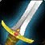

Battlegear of Glory
Dano · Ferraria
- 2 peças: +1% de velocidade de ataque e conjuração
- 3 peças: Intimidating Shout 30 s mais rápido
- 4 peças: +36 de Poder de Ataque contra Humanoides
- 5 peças: Recklessness 30 s mais rápido
Classe · WoW Forever

Guerreiro no WoW ForeverTudo que o Guerreiro precisa saber no Forever: as builds de talento de cada especialização (upar, raide e PvP), o conjunto de raide fabricado, a profissão que faz, os bônus e os conjuntos de masmorra que servem pra você enquanto upa.
Armadura: Placa · Profissão do conjunto de raide: Ferraria no 300 · Raides abrem em 09/12/2026
| Pra quê | Pontos | Talentos-chave | |
|---|---|---|---|
| Upar 1-60 | 36/15/0 | Improved Overpower (Subjugar Aprimorado), Bloodthrill (Euforia Sanguínea), Improved Slam (Batida Aprimorada), Mortal Strike (Golpe Mortal), Enrage (Enfurecer); foca em sobreviver e gerar Raiva | Abrir a build |
| Upar (variante da pág. de talentos) | 35/16/0 | Igual à de raide, mas sem Improved Bloodrage (Fúria Sanguinária Aprimorada) e Improved Heroic Strike (Golpe Heroico Aprimorado); põe Deflection (Deflexão) e Improved Charge (Investida Aprimorada) | Abrir a build |
| Raide/masmorra | 32/17/2 | Mortal Strike (Golpe Mortal); ponto flexível em Enrage (Enfurecer), que pode ir para Booming Voice (Voz Estrondosa) ou Unbridled Wrath (Ira Descontrolada) | Abrir a build |
| PvP | 35/16/0 | Deflection (Deflexão) no lugar de Improved Heroic Strike; flexíveis: Improved Slam, Spearing Strike (Golpe Lanceador), Enrage | Abrir a build |
| Pra quê | Pontos | Talentos-chave | |
|---|---|---|---|
| Upar 1-60 | 11/40/0 | Corre para Gore Drinker (Bebedor de Sangue) e Bloodthirst (Sede de Sangue), depois Flurry (Ímpeto) e Deflection (Deflexão) em Armas | Abrir a build |
| Raide | 17/34/0 | Death Wish (Desejo de Matar), Bloodthirst (Sede de Sangue), Flurry (Ímpeto), Improved Overpower (Subjugar Aprimorado), Impale (Empalar) | Abrir a build |
| Masmorra | 17/34/0 | Igual à de raide, mas troca Improved Berserker Rage (Raiva Incontrolada Aprimorada) por Lingering Rage (Raiva Duradoura) e Enrage 5/5 | Abrir a build |
| PvP | 17/34/0 | Improved Berserker Rage (tira root/lentidão), Improved Intercept (Interceptar Aprimorado). O guia diz que Fúria é fraco no PvP perto de Armas | Abrir a build |
| Pra quê | Pontos | Talentos-chave | |
|---|---|---|---|
| Upar (Prot fundo, recomendado) | 0/19/32 | Build de Proteção funda, "mais tranquila" | Abrir a build |
| Upar (rota Armas, p/ experientes) | 28/5/18 | Sweeping Strikes (Golpes a Esmo) + Cleave (Cutilada) + Revenge (Revanche), alternando posturas | Abrir a build |
| Raide (padrão) | 4/15/32 | Enrage 5/5 (Enfurecer), Deflection 4 (Deflexão), Anticipation (Antecipação), Focused Rage (Raiva Concentrada); pula quase todos os talentos de redução de custo de Raiva | Abrir a build |
| Raide (Impale) | 17/2/32 | Impale (Empalar), Deep Wounds (Feridas Profundas), Improved Rend (Dilacerar Aprimorado: Rend agora escala com Poder de Ataque), Vanguard (Vanguarda) | Abrir a build |
| Raide (Fury-prot) | 3/31/17 | Flurry (Ímpeto), Bloodthirst (Sede de Sangue), Death Wish (Desejo de Matar) + Shield Slam (Escudada); só compensa se fizer a fase de Execute | Abrir a build |
| Situacional (duas armas, contra elementais) | 20/31/0 | O guia avisa: +50% de dano recebido; use só contra inimigo de ataque não bloqueável | Abrir a build |
| Masmorra (Prot fundo) | 4/15/32 | Defensive Stance (Postura de Defesa) com Enrage alto contra vários alvos; opção de Piercing Howl (Uivo Perfurante) | Abrir a build |
| Masmorra (cleave) | 28/5/18 | Sweeping Strikes (Golpes a Esmo) espalha Revenge e Cleave; o guia chama de "o tanque de maior dano do jogo" | Abrir a build |
| PvP | 0/19/32 | Concussion Blow (Pancada de Concussão), Improved Shield Bash (Trombada com Escudo Aprimorada), Shield Slam (dissipa magia), Blood Craze (Fervor Sangrento) | Abrir a build |
Fonte dos talentos: guias de talentos e de upar do Wowhead para o WoW Forever (patch 1.60.1, editados entre 04/11 e 26/11/2026) e notas de desenvolvimento da Blizzard. Builds de raide ainda são estimativa até as raides abrirem em 09/12.
Dano · Ferraria
Tanque · Ferraria
Quer saber se vale pegar Ferraria? Veja o guia de profissões do Forever.
Nível 41 · do seu tipo de armadura
Nível 52 · feito pra Guerreiro
Nível 58 · feito pra Guerreiro
Fontes: banco de dados do Wowhead para o WoW Forever (atributos e bônus liberados por hotfix; a Blizzard confirmou ao Wowhead que os bônus dos conjuntos fabricados são provisórios) e anúncio oficial das raides da Blizzard. Conferido em novembro de 2026.
Outras classes: Druida · Caçador · Mago · Paladino · Sacerdote · Ladino · Xamã · Bruxo